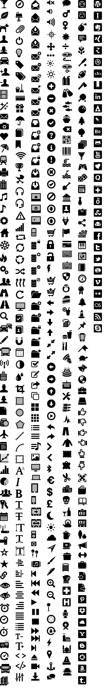

TAMP

×
Terrain map data
OpenStreetMap ©
OpenStreetMap contributors
NaturalEarth
public domain
EU-DEM © Produced using Copernicus data and information
funded by the European Union
SRTM ©
NASA
GTOPO30
CleanTOPO2 public domain
GlobCover ©
ESA
Terrain map design ©
EOX IT Services GmbH